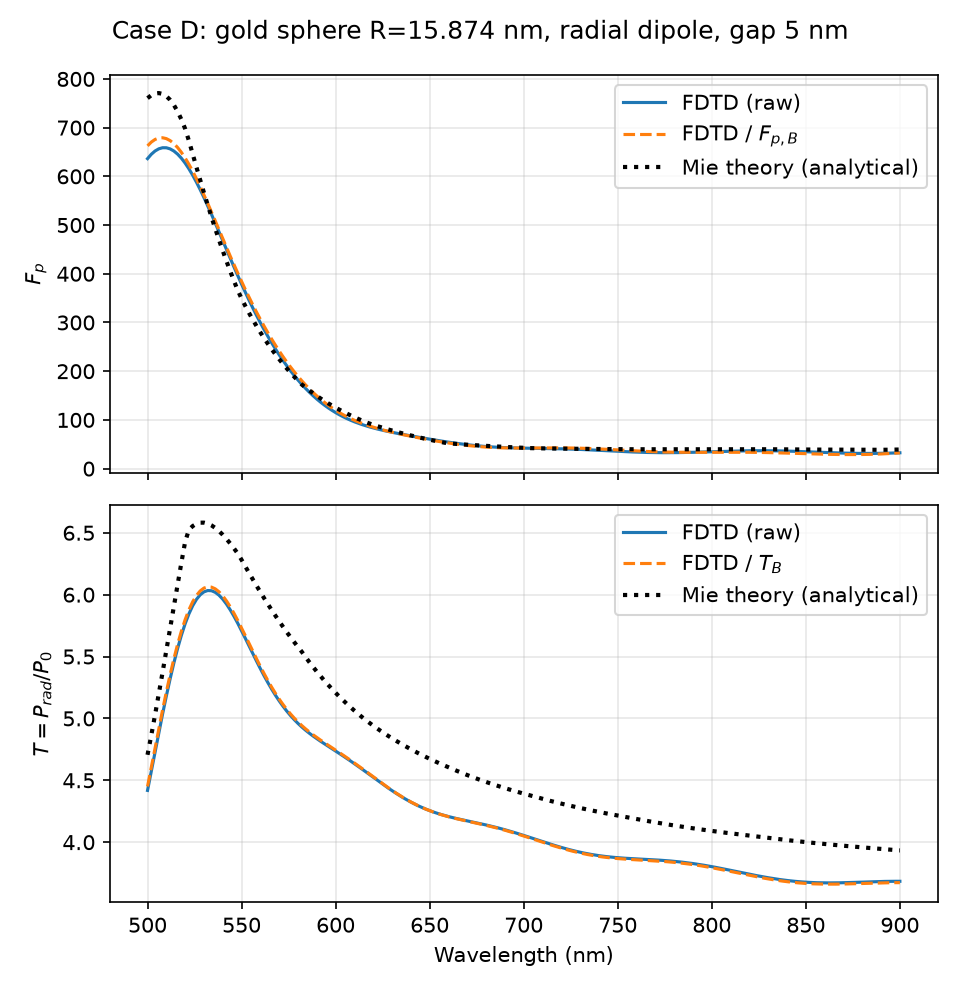
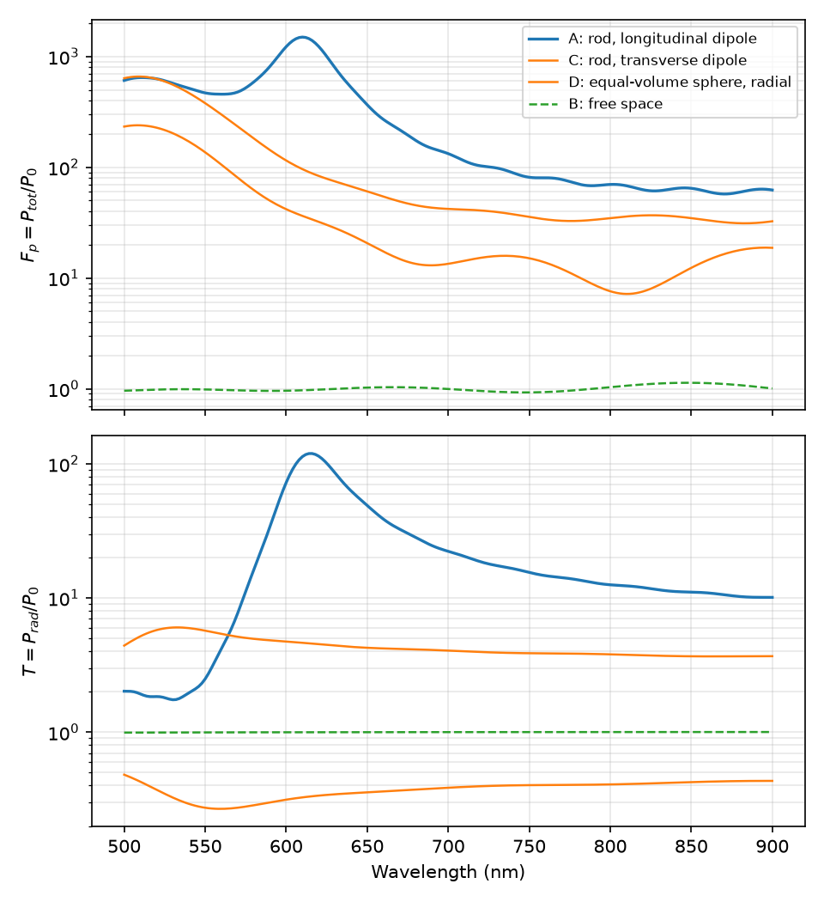
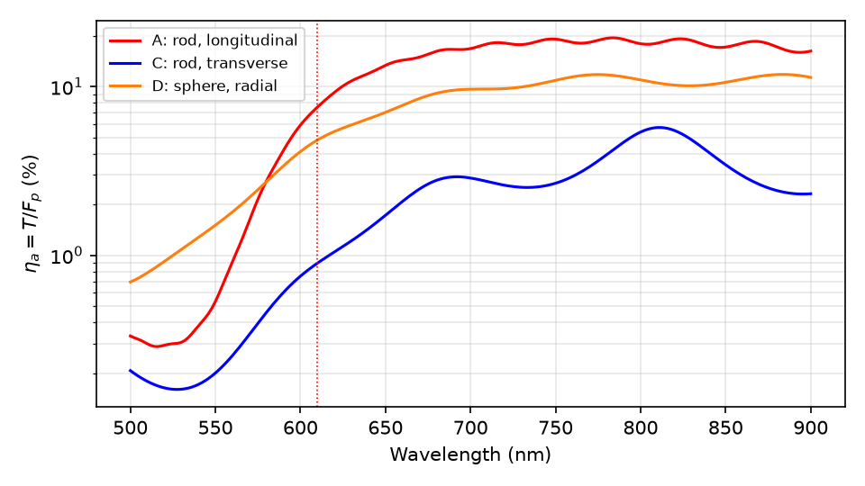
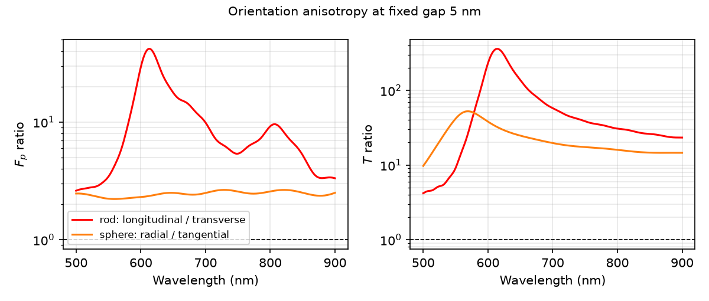
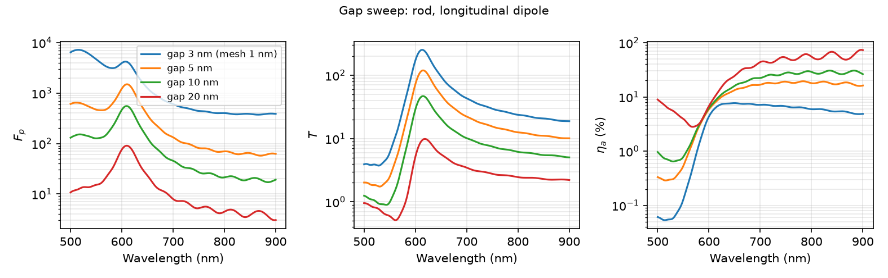
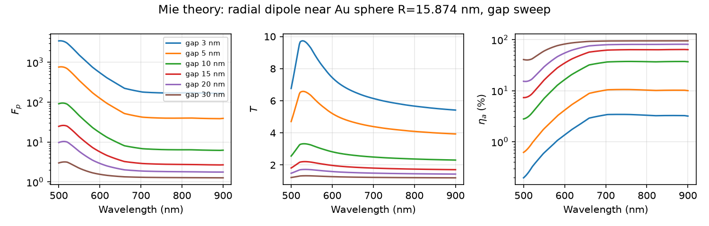
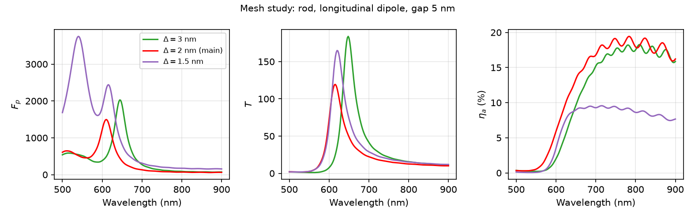
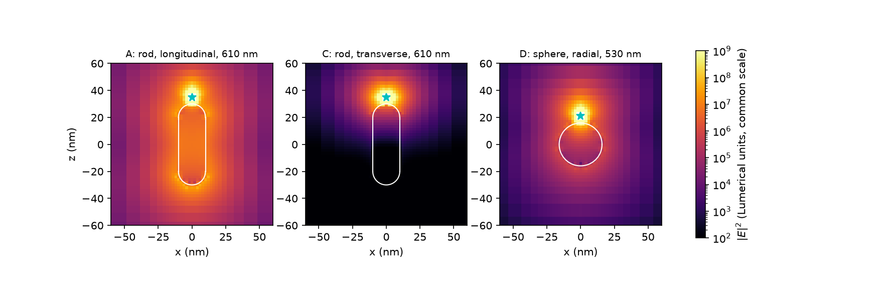
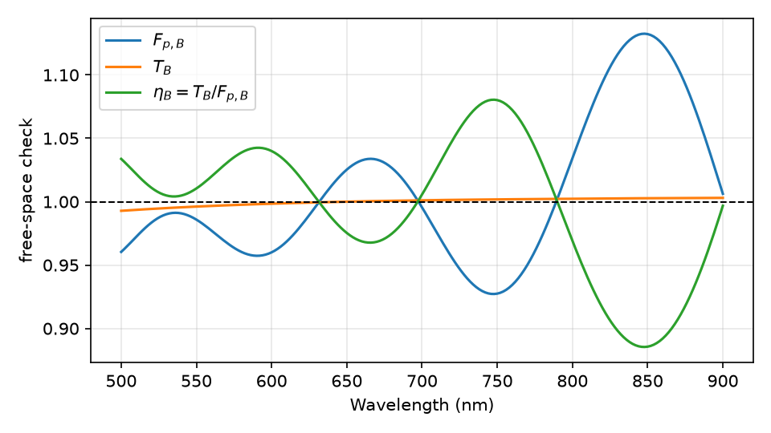

کنترل نرخ گسیل خودبهخودی با نانوآنتنهای پلاسمونی، نقشی تعیینکننده در افزایش نرخ تکرار و کیفیت فوتونی چشمههای تکفوتونی کوانتومی دارد. در این مقاله، برهمکنش یک گسیلندهی دوقطبی نقطهای با نانومیلهی طلای کلاهکدار (طول کل \(\nm{60}\)، قطر \(\nm{20}\)) با روش سهبعدی تفاضل محدود در حوزهی زمان (3D-FDTD) در ده اجرای کنترلشده بررسی شد. برای دوقطبی طولی در فاصلهی \(\nm{5}\) از نوک، قلهی فاکتور پورسل \(F_p = 1.5\times10^{3}\) در \(\nm{610}\) و بیشینهی تقویت توان تابشی \(T = 1.2\times10^{2}\) در \(\nm{616}\) به دست آمد؛ بازده تابشی ظاهری در قلهی پورسل \(7.6\%\) است و بیش از \(92\%\) توان به کانال غیرتابشی میرود (رابطهی (9)). چهار کنترل — فضای آزاد، دوقطبی عرضی روی همان نوک، و کرهی طلای همحجم با دوقطبی شعاعی و مماسی — نشان دادند که نسبت پاسخ شعاعی به مماسی کره در کل طیف نزدیک \(2.4\) و تقریباً ثابت است، در حالی که نسبت طولی به عرضی نانومیله از همین مقدار در خارج تشدید تا \(41\) در تشدید طولی میرسد؛ یعنی ناهمسانگردی نانومیله ماهیتی تشدیدی دارد. پویش گاف (\(3\) تا \(\nm{20}\)) مبادلهی تقویت–بازده را کمّی کرد و مقایسهی حالت کره با حل تحلیلی می، کمبرآوردی \(8\) تا \(14\%\) ارتفاع قلهها در مش \(\nm{2}\) را نشان داد. آزمون همگرایی مش (\(3\)، \(2\) و \(\nm{1.5}\)) مکان قلهی تابشی را پایدار (\(\nm{616\pm4}\)) ولی ارتفاع قلهها را با عدمقطعیت \(\pm40\%\) حساس به قرارگیری زیرسلولی چشمه یافت. یافتههای پویش گاف نشان میدهد که برای چشمههای تکفوتونی کارآمد، گافهای \(10\) تا \(\nm{20}\) به دلیل تعادل میان تقویت و بازده تابشی (\(9\) تا \(12\%\) در قلهی تابشی و تا \(74\%\) در بیشینهی طیفی) گزینهی مناسبتری از فاصلههای بسیار نزدیکاند. این نتیجهها بر مکان تشدیدها، بازده و نسبتهای هممش استوارند، نه بر رقم دقیق ارتفاع قله.
کلیدواژهها: نانومیلهی طلا، پلاسمون سطحی موضعی (LSPR)، فاکتور پورسل، روش FDTD، خاموشی غیرتابشی (Quenching)، ناهمسانگردی تشدیدی، چشمهی تکفوتونی.
دستکاری نرخ گسیل خودبهخودی اتمها، مولکولهای فلورسنت و نقاط کوانتومی از طریق اصلاح چگالی موضعی حالات فوتونی (LDOS)، موضوعی محوری در الکترودینامیک کوانتومی کاواکی (cQED) و نانوفوتونیک مدرن است. بر اساس اثر پورسل {{purcell}}، نرخ گسیل خودبهخودی یک گسیلنده میتواند با قرارگیری در داخل یا مجاورت یک تشدیدگر اپتیکی به شدت افزایش یابد. در حالی که کاواکهای دیالکتریک سنتی به دلیل حد پراش نور دارای حجم مدی نسبتاً بزرگی هستند، نانوساختارهای فلزی با تکیه بر تشدید پلاسمونهای سطحی موضعی (LSPR) قادرند نور را در مقیاسهای بسیار کوچکتر از طولموج فشرده کرده و حجم مدی فوقالعاده پایینی (\(V_{\rm mode}\ll\lambda^3\)) فراهم آورند {{maier|pp. 34–37}}.
در میان هندسههای مختلف نانوذرات فلزی، نانومیلههای طلا (Gold Nanorods) به دلیل قابلیت تنظیم طولموج تشدید طولی در بازهی مرئی و فروسرخ نزدیک و همچنین ایجاد میدانهای به شدت متمرکز در نوکهای دارای انحنا (اثر رعدوبرق یا Lightning-rod effect)، جایگاه ویژهای در طراحی نانوآنتنهای نوری دارند {{chen}}. با این حال، قرارگیری گسیلنده در فاصلهی بسیار نزدیک از سطح فلز چالش رقابت میان تقویت تابشی و اتلافات اهمی ناشی از جذب درونباندی فلز (پدیدهی خاموشی یا Quenching) را به همراه دارد {{anger,koenderink,ford}}. این رقابت بهویژه در توسعهی چشمههای تکفوتونیِ تحریک پالسی (on-demand) برای شبکههای توزیع کلید کوانتومی (QKD) اهمیت بنیادی دارد: نرخ واپاشی کل، بیشینهی نرخ تکرار چشمه را تعیین میکند و برای تولید فوتونهای نامتمایز، طولعمر تابشی گسیلنده باید در مقایسه با زمان ناهمدوسی (dephasing time) کوتاه باشد {{koenderink,aharonovich,hoang}}. بنابراین سنجش دقیق سهم کانالهای تابشی و اتلافی مشخص میکند که چشمه در چه فاصلهای بیشترین فوتونِ قابل جمعآوری (روشنایی، Brightness) را بدون افتادن در دام اتلاف اهمی فلز تولید میکند.
برای نانوکره و نانومیلهی طلا، محاسبات نظری نشان دادهاند که با نزدیکشدن گسیلنده به نوک میله، نرخ کل تا مرتبهی \(10^3\) رشد میکند اما بازده تابشی در گافهای چندنانومتری بهشدت افت میکند {{mohammadi,kuhn}}. از این رو، مدلسازی دقیق سهم کانالهای تابشی و غیرتابشی نقشی کلیدی در بهینهسازی عملکرد این سیستمها ایفا میکند. در این کار، با پیادهسازی یک مدل سهبعدی FDTD دقیق، پاسخ الکترومغناطیسی، تقویت فاکتور پورسل، بازده تابشی و نقشهی میدان نزدیک نانومیلهی طلا به تفکیک استخراج و تحلیل شده است.
زبانی که امروز برای توصیف گسیل خودبهخودی به کار میرود، از فیزیک اتمی به ارث رسیده است. در این زبان، نرخ گذار میان دو تراز با ضرایب اینشتین — ضریب گسیل خودبهخودی \(A_{21}\) و ضرایب گسیل و جذب القایی — بیان میشود و ترازها با برچسبهای \(s\)، \(p\) و \(d\) و عددهای \(l\) و \(m\) شناسانده میگردند. این چارچوب بر تقارن کروی پتانسیل کولنی بنا شده است: هارمونیکهای کروی \(Y_{lm}(\theta,\varphi)\)، نتیجهی جداسازی معادلهی موج در دستگاه مختصات کرویاند و اعتبارشان به همین تقارن گره خورده است {{griffiths,jackson}}. همین زبان، تقریباً بیتغییر، به نانوفوتونیک منتقل شده است؛ مدهای پلاسمونی نانوذرهی کروی با همان برچسبهای \(l\) و \(m\) ردهبندی میشوند و مدل هیبریداسیون پلاسمونی — که پاسخ نانوساختارهای مرکب را بهخوبی پیشبینی میکند — صریحاً از قیاس نظریهی اوربیتال مولکولی بهره میگیرد {{prodan}}.
انتقال این چارچوب به هندسهی نانومیله دو پرسش را پیش میکشد. نخست، نانومیله تقارن کروی ندارد و محور طولی آن یک محور ممتاز است؛ نشانهی تجربی این تفاوت آشکار است، چرا که نانوذرهی کروی یک تشدید پلاسمونی دارد و نانومیله به دو تشدید مجزای طولی و عرضی با پهنای خط و انرژی متفاوت شکافته میشود {{sonnichsen}}. افزون بر این، جایگاه ویژهی کره در ادبیات موضوع بیش از هر چیز ریشهای ریاضی دارد: کره از معدود هندسههایی است که مسئلهی پراکندگی در آن حل تحلیلی بسته دارد. حلشدنی بودن، خاصیت دستگاه مختصات است و نه خاصیتی از فیزیک مسئله. دوم، در فاصلههای نانومتری از سطح فلز، کانال غیرتابشی فعال میشود و بازده تابشی به فاصله و طولموج وابسته میگردد؛ اندازهگیریهای تکمولکولی و محاسبات نظری هر دو نشان دادهاند که تقویت و خاموشی فلورسانس رفتار یکسانی ندارند و آهنگهای تابشی و غیرتابشی از آغاز باید جداگانه فرمولبندی شوند {{anger,bharadwaj2007,carminati2006}}. بر این پایه، در این پژوهش علاوه بر کمّیسازی تقویت پورسل و بازده تابشی نانومیلهی طلا، نشان داده میشود که همین نتایج عددی مستقیماً دامنهی اعتبار توصیفهای همسانگرد و تکپارامتری را آشکار میکنند. تأکید میشود که هدف، ابطال این توصیفها نیست بلکه تعیین مرزی است که هندسهی ناهمسانگرد بر آنها تحمیل میکند.
ساختار مقاله چنین است: بخش ۲ چارچوب مفهومی و پرسش تقارنی را صورتبندی میکند؛ بخش ۳ مدل عددی، حالتهای کنترل و راستیآزمایی تحلیلی را شرح میدهد؛ بخش ۴ نتایج و برآورد عدمقطعیت را ارائه میکند و بخش ۵ جمعبندی و محدودیتها را بیان میکند.
چنانکه در مقدمه اشاره شد، برچسبهای \(l\) و \(m\) شناسههای جداسازی معادلهی موج در دستگاه مختصات کرویاند:
\[ \nabla^2\psi + k^2\psi = 0 \;\Longrightarrow\; \psi(r,\theta,\varphi) = R_l(r)\,Y_{lm}(\theta,\varphi). \tag{1} \]اعتبار این برچسبگذاری به تقارن کروی مرز مسئله وابسته است {{griffiths,jackson,novotny}}؛ اگر مرز تقارن کروی نداشته باشد، جداسازی متغیرها به این شکل انجام نمیشود و \(l\) دیگر عدد کوانتومی خوبی نخواهد بود.
باید دقت کرد که نانواپتیک مدرن خود از ابتدا توصیفی جهتدار از نرخ گسیل به دست میدهد: نرخ واپاشی دوقطبی \(\mathbf{p} = p\,\hat{\mathbf{n}}\) در مکان \(\mathbf{r}_0\) با چگالی موضعی جزئی حالتها،
\[ \frac{\Gamma}{\Gamma_0} = \frac{6\pi c}{\omega}\; \hat{\mathbf{n}}\cdot \mathrm{Im}\!\left[\overleftrightarrow{\mathbf{G}}(\mathbf{r}_0,\mathbf{r}_0;\omega)\right]\cdot\hat{\mathbf{n}}, \tag{2} \]بیان میشود که در آن \(\overleftrightarrow{\mathbf{G}}\) تانسور گرین دوگانه است {{novotny|ch. 8}}. در چارچوب الکترودینامیک کوانتومی و در رژیم جفتشدگی ضعیف، بخش موهومی تانسور گرین مستقیماً متناسب با LDOS تصویرشده بر جهت دوقطبی است {{novotny}}؛ از این رو ناهمسانگردی شدید این تانسور در نانومیله به این معناست که جهتگیری گسیلنده خود یک پارامتر طراحی است: همراستا کردن دوقطبی گسیلنده با محور طولی، کانال تابشی را بهمراتب بیش از کانال اتلافی تقویت میکند (بخش ۴.۲). بنابراین پرسش این پژوهش ابطال ضرایب اینشتین نیست؛ پرسش این است که وقتی رابطهی (2) را برای هندسهای با محور ممتاز حل میکنیم، چه سهمی از زبان کروی (برچسبهای \(l\) و \(m\)، توصیف تکپارامتری «فاکتور پورسل») هنوز کارآمد میماند و کجا باید کنار گذاشته شود. رابطهی (2) همزمان نشان میدهد که میانگینگیری روی جهتگیری دوقطبی — \(\tfrac13\,\mathrm{Tr}\,\mathrm{Im}\,\overleftrightarrow{\mathbf{G}}\) — تنها زمانی با نرخ واقعی برابر است که تانسور گرین همسانگرد باشد؛ در هندسهی نانومیله چنین نیست و همین نکته، مبنای مقایسهی حالتهای طولی و عرضی در بخش ۴ است.
پیش از ورود به بحث اصلی، تفکیک دو مفهومی که ریاضیات مشترکی دارند ضروری است. برچسبهای \(l\) و \(m\) هم در توصیف اوربیتالهای اتمی و هم در توصیف مدهای پلاسمونی یک نانوذرهی کروی به کار میروند، اما این دو از نظر فیزیکی یکسان نیستند (جدول ۱).
| ویژگی | اوربیتال اتمی | مد پلاسمونی نانوذره |
|---|---|---|
| معادلهی حاکم | شرودینگر | ماکسول (هلمهولتز) |
| ماهیت میدان | تابع موج اسکالر \(\psi\) | میدان برداری \(\mathbf{E}\) |
| منشأ تقارن | پتانسیل کولنی \(1/r\) | شکل مرز هندسی |
| معنای \(l\) | عدد کوانتومی مدار | برچسب مرتبهی چندقطبی |
آنچه میان دو ستون جدول ۱ مشترک است، ساختار زاویهای جوابها است، نه فیزیک حاکم بر آنها. در مورد اتم، تقارن کروی از پتانسیل کولنی میآید؛ در مورد نانوذره، از شکل مرز هندسی. بنابراین نقد ارائهشده در این پژوهش در سطح دستگاه مختصات و تقارن مرزی وارد میشود و به هیچ روی ناظر بر درستی مکانیک کوانتومی یا نظریهی می برای ذرهی کروی نیست.
این تمایز از آن رو اهمیت دارد که انتقال زبان اتمی به پلاسمونیک در برخی مدلهای پرکاربرد آگاهانه و صریح انجام شده است. مدل هیبریداسیون پلاسمونی، پاسخ نانوساختارهای مرکب را با قیاس مستقیم از نظریهی اوربیتال مولکولی و از راه جفتشدگی مدهای چندقطبی با برچسبهای \(l\) و \(m\) توصیف میکند {{prodan}}؛ همین قیاس در متن مرجع پلاسمونیک نیز مبنای توصیف مدهای نانوپوستهها قرار گرفته است {{maier|pp. 85–87}}. چنین قیاسی سودمند و در بسیاری موارد پیشبین است، اما مانند هر قیاس دیگری دامنهی اعتبار خود را دارد و این دامنه به تقارن هندسهی مورد بررسی گره خورده است. در همین راستا، ادبیات نانوفوتونیک برای ساختارهای فلزیِ ناهمسانگرد بهطور فزاینده از چارچوب مفهومی نانوآنتن بهره میگیرد که در آن مشخصههای کلیدی، بازده تابشی و الگوی تابشاند، نه مرتبهی چندقطبی {{vanhulst}}.
گذار از یک نانوذرهی کروی به یک نانومیله، از دیدگاه تقارن، کاهش گروه تقارن پیوستهی \(SO(3)\) به گروه \(C_{\infty v}\) است: تقارن چرخشی حول همهی محورها جای خود را به تقارن چرخشی حول یک محور ممتاز (محور طولی \(z\)) میدهد. در نتیجه، جداسازی متغیرها به شکل رابطهی (1) دیگر برقرار نیست. پیامد این کاهش برای برچسبگذاری مدها یکنواخت نیست و باید با دقت تفکیک شود. تقارن چرخشی باقیمانده حول \(z\) تضمین میکند که عدد آزیموتالی \(m\)، که وابستگی میدان به مؤلفهی \(\varphi\) را به شکل \(e^{im\varphi}\) توصیف میکند، همچنان یک عدد کوانتومی خوب باقی بماند؛ همچنین در ساختار کشیده و شبهیکبعدی، ثابت انتشار محوری \(\beta\) در سیمِ بینهایت به عنوان شناسهی پیوستهی مد ظاهر میشود که در میلهی متناهی به شرط تشدید فابری–پرو (\(2\beta L + 2\phi_r = 2\pi m_z\)) کمّیشده و گسسته میشود. در برابر آن، عدد \(l\) و تبهگنی \((2l+1)\)-گانهی متناظر با آن، که هر دو نتیجهی مستقیم تقارن کامل \(SO(3)\) هستند، معنای خود را از دست میدهند؛ \(m\) (آزیموتال) عدد کوانتومی خوبِ باقیمانده است. به همین دلیل است که در ادبیات نانوسیمها و نانومیلههای فلزی، مدهای پلاسمونی معمولاً تنها با شمارهی آزیموتالی برچسب میخورند و از برچسب چندقطبی کروی استفاده نمیشود؛ به عنوان نمونه، در بررسی جفتشدگی نور با یک سیم طلای استوانهای، بیشینهی جفتشدگی به پلاریتون پلاسمون سطحی از مرتبهی \(m=2\) نسبت داده شده است {{lee,schmidt}}. نشانهی تجربی این افت تقارن در نانومیلهها آشکار است: طیف خاموشی نانومیلهی طلا به دو تشدید مجزای طولی و عرضی شکافته میشود که پهنای خط و انرژی متفاوتی دارند {{sonnichsen}}؛ در توصیف شبهاستاتیکی نیز همین شکافت با فاکتورهای هندسی بیضیگون بازنمایی میشود {{maier|p. 72}}. چنین شکافتی در نانوذرهی کروی وجود ندارد و مستقیماً پیامد وجود محور ممتاز است.
از این تحلیل، صورتبندی دقیق ادعای این پژوهش به دست میآید. آنچه در گذار به تقارن استوانهای رخ میدهد، بیاعتبار شدن یکجای برچسبگذاری کروی نیست، بلکه حفظ بخشی از آن (\(m\)) و از دست رفتن بخش دیگر (\(l\)) است. تشخیص این مرز، خود معیاری برای تعیین دامنهی اعتبار مدل فراهم میکند. این صورتبندی یک پیشبینی آزمونپذیر هم دارد: چون تنها \(m\) حفظ میشود، پاسخ نانومیله باید به جهتگیری دوقطبی نسبت به محور ممتاز بهشدت وابسته باشد و این وابستگی باید بسیار قویتر از وابستگی جهتی در کرهی همحجم باشد. بخش ۴.۲ این پیشبینی را با اجرای مستقیم دوقطبی طولی و عرضی روی یک نوک، و دوقطبی شعاعی و مماسی روی کرهی همحجم، میآزماید.
هندسهی مورد بررسی در این پژوهش وضعیتی حتی پیچیدهتر از یک استوانهی آرمانی دارد. ساختار از یک بدنهی استوانهای با دو کلاهک نیمکروی تشکیل شده است؛ بنابراین مرز جسم در ناحیهی بدنه با دستگاه مختصات استوانهای و در ناحیهی کلاهک با دستگاه مختصات کروی همخوان است، اما هیچیک از این دو دستگاه به تنهایی مرز کل جسم را توصیف نمیکند. در نتیجه، نه پایهی هارمونیکهای کروی و نه پایهی مدهای استوانهای، هیچکدام مجموعهی طبیعی و برازندهای برای بسط میدان در این هندسه نیستند. همین ویژگی، که مستقل از هر ملاحظهی عددی دیگری برقرار است، توسل به حل مستقیم و تمامبرداری معادلات ماکسول را نه یک انتخاب محاسباتی بلکه یک ضرورت میسازد.
باید تأکید شود که هدف این بخش تنها تعیین حدود اعتبار برچسبگذاریهای مبتنی بر تقارن کروی است. توسعهی یک پایهی مدی متناسب با تقارن استوانهای و ارزیابی کارایی آن، خارج از دامنهی این پژوهش است.
شبیهسازیها با روش تفاضل محدود سهبعدی در حوزهی زمان (3D-FDTD) و نرمافزار Lumerical FDTD 2024 R1 انجام شد {{taflove}}. ساختار اصلی یک نانومیلهی طلا با طول کل \(L = \nm{60}\) و قطر \(D = \nm{20}\) است: بدنهای استوانهای به طول \(\nm{40}\) و شعاع \(R = \nm{10}\) همراه با دو کلاهک نیمکروی همشعاع؛ رأس کلاهک بالایی در \(z = \nm{30}\) قرار دارد. دادهی اپتیکی طلا از مجموعهی جانسون و کریستی {{johnson}} گرفته شد (مدخل پیشفرض «Au (Gold) – Johnson and Christy» کتابخانهی نرمافزار) که نرمافزار آن را با تنظیمات پیشفرض خود (مدل چندضریبی با حداکثر شش ضریب و تحمل برازش \(0.1\)) در بازهی شبیهسازی برازش میکند {{vial,lumerical}}؛ رویکردی که برای وارد کردن پاشندگی طلا در FDTD متداول است {{vial}}. ضرایب برازش و RMSE برازش توسط نرمافزار خروجی داده نمیشوند و به همین دلیل خطای برازش بهصورت مستقل ارزیابی نشده و در جدول عدمقطعیت بهعنوان مورد کمّینشده آمده است. بر اساس تجربهی FDTD، بیشترین خطای این برازش نزدیک لبهی گذارهای بیننواری (\(\sim\nm{520}\)) رخ میدهد و میتواند مکان قلههای نزدیک این ناحیه (حالتهای C و D) را چند نانومتر جابهجا کند؛ گزارش RMSE در نسخههای بعدی باید اضافه شود. محیط پیرامون هوا با ضریب شکست یک است.
گسیلنده بهصورت دوقطبی الکتریکی نقطهای در فاصلهی \(d = \nm{5}\) از رأس بالایی، یعنی در \((x,y,z) = (0,0,\nm{35})\)، قرار گرفت. در رژیم جفتشدگی ضعیف، دوقطبی نقطهای کلاسیک مدل استاندارد یک گسیلندهی دوترازه است: نسبت توان دوقطبی کلاسیک در حضور ساختار به توان آن در محیط همگن، برابر نسبت نرخ گذار خودبهخودی کوانتومی (\(A_{21}\)) در همان دو محیط است {{ford,novotny}}؛ این همارزی تا زمانی برقرار است که جفتشدگی قوی (شکافت رابی) رخ ندهد. هندسه و جهتهای دوقطبی در شکل ۱ و حالتهای اجراشده در جدول ۲ آمدهاند. در حالت اصلی A دوقطبی در راستای محور طولی \(z\) است. برای آزمودن وابستگی جهتی و هندسی، چهار کنترل اجرا شد: B، همان چشمه در فضای آزاد؛ C، همان نانومیله و همان نقطه ولی با دوقطبی عرضی در راستای \(x\)؛ D، کرهی طلای همحجم با شعاع \(R_{\rm sph} = \nm{15.874}\) و دوقطبی شعاعی در همان گاف؛ و \(\mathrm{D}_\perp\)، همان کره با دوقطبی مماسی. شعاع کره از برابر گرفتن حجم آن با مجموع حجم استوانه و دو نیمکره (\(\pi R^2\cdot 40 + \tfrac43\pi R^3\)) به دست میآید. افزون بر این، برای حالت اصلی، دو اجرای همگرایی مش (\(\nm{3}\) و \(\nm{1.5}\)) و سه اجرای پویش گاف (\(3\)، \(10\) و \(\nm{20}\)) انجام شد. همهی اجراها با یک اسکریپت واحد و بدون دخالت دستی انجام شدهاند و فایل طیفی ۲۰۱ نقطهای، خلاصه و لاگ حلگر هر یک موجود است.
| حالت | هندسه | جهت دوقطبی | هدف |
|---|---|---|---|
| A | نانومیله | طولی (\(z\)) | نتیجهی اصلی |
| B | — | \(z\) | مرجع فضای آزاد |
| C | نانومیله | عرضی (\(x\)) | کنترل جهتگیری |
| D | کرهی همحجم | شعاعی (\(z\)) | کنترل شکل |
| \(\mathrm{D}_\perp\) | کرهی همحجم | مماسی (\(x\)) | ناهمسانگردی کره |
| M3, M1.5 | نانومیله | طولی | همگرایی مش (\(3\) و \(\nm{1.5}\)) |
| G3, G10, G20 | نانومیله | طولی | گاف \(3\) (مش \(\nm{1}\))، \(10\) و \(\nm{20}\) |
ناحیهی FDTD مکعبی به ضلع \(\nm{600}\) با دوازده لایهی PML در هر مرز، حداکثر زمان شبیهسازی \(\mathrm{300\,fs}\) و آستانهی خاموشی خودکار \(10^{-5}\) تعریف شد؛ در عمل، به دلیل میرایی سریع مدهای پلاسمونی، خاموشی خودکار در حالتهای B، C و D پس از \(19\) تا \(\mathrm{28\,fs}\) و در حالتهای نانومیله با دوقطبی طولی (که مد طولی با پهنای کمتر برانگیخته میشود) پس از \(52\) تا \(\mathrm{80\,fs}\) فعال شد. یک ناحیهی مش موضعی همسانگرد با \(dx = dy = dz = \nm{2}\) کل نانوساختار، گاف و چشمه را پوشاند؛ مش سراسری با دقت ۳ تعریف شد. پاسخ طیفی از \(\nm{500}\) تا \(\nm{900}\) با ۲۰۱ نقطه (گام \(\nm{2}\)) نمونهبرداری شد؛ بنابراین عدمقطعیت مکان قلهها \(\pm\nm{2}\) است.
توان تابشی با انتگرالگیری شار پوئینتینگ روی شش مانیتور صفحهای در وجوه یک مکعب به ضلع \(\nm{400}\) محاسبه شد. با لحاظکردن جهت نرمال هر وجه، کمیت بیبعد تقویت تابشی برابر است با
\[ T(\lambda) = \frac{P_{\rm rad}}{P_0} = \frac{1}{P_0}\iint_{\rm box} \mathbf{S}\cdot d\mathbf{A}, \tag{3} \]که \(P_0\) توان تابشی همان دوقطبی در فضای همگن است. فاکتور پورسل کل، بازده تابشی و توان اتلافی نیز از
\[ F_p(\lambda) = \frac{\Gamma_{\rm tot}}{\Gamma_0} = \frac{P_{\rm tot}}{P_0}, \tag{4} \] \[ \eta_a(\lambda) = \frac{T(\lambda)}{F_p(\lambda)}, \tag{5} \] \[ \frac{P_{\rm loss}}{P_0} = F_p(\lambda) - T(\lambda) \tag{6} \]به دست آمدند، که در آن \(P_{\rm tot}\) کار کل انجامشده توسط میدان بر خود دوقطبی است (در نرمافزار، \(P_{\rm tot}\) و \(P_0\) بهترتیب با توابع dipolepower و sourcepower خوانده میشوند).
مرجع فضای آزاد. حالت B برای کنترل نرمالسازی استفاده شد. مقدار \(T_B\) در کل بازه بین \(0.993\) و \(1.003\) ماند، اما \(F_{p,B}\) وابستگی طیفی نوسانی داشت و بین \(0.927\) (\(\nm{748}\)) و \(1.133\) (\(\nm{848}\)) تغییر کرد؛ در نتیجه \(\eta_B = T_B/F_{p,B}\) در \(\nm{748}\) به مقدار غیرفیزیکی \(1.08\) میرسد (شکل ۱۰). این انحراف، عدمقطعیت نرمالسازی \(F_p\) را \(\pm13\%\) در کل بازه و حدود \(3\%\) در \(\nm{610}\) تعیین میکند. منشأ این نوسان تفکیک نشده است: هم بازتاب جزئی از لایههای PML و هم خطای درونیابی منبع میتوانند سهم داشته باشند و برای تفکیک، کنترل با جعبهی بزرگتر/PML بیشتر یا اجرای B در \(z = \nm{35}\) لازم است (بهعنوان گام بعدی). باید توجه داشت که در حالت B دوقطبی در \(z = 0\) و روی گرهی مش قرار دارد، در حالی که در A، C و D در \(z = \nm{35}\) و بین دو گرهی مش \(\nm{2}\) است؛ بنابراین B خطای درونیابی منبع در حالتهای اصلی را دقیقاً بازتولید نمیکند و مقادیر «تصحیحشده» با B تنها بهعنوان برآورد حساسیت گزارش میشوند، نه بهعنوان نتیجهی اصلی. اهمیت این نکته در آزمون همگرایی مش (زیربخش ۴.۵) آشکار میشود.
راستیآزمایی تحلیلی با نظریهی می. حالت D امکان یگانهای برای اعتبارسنجی مستقل فراهم میکند، زیرا نرخ واپاشی دوقطبی شعاعی کنار کرهی فلزی حل بسته دارد {{ruppin,kim,mertens}}:
\[ \frac{\Gamma_{\rm tot}}{\Gamma_0} = 1 + \frac32\,\mathrm{Re}\sum_{n\ge1} n(n+1)(2n+1)\,B_n\left[\frac{h_n^{(1)}(x)}{x}\right]^2, \tag{7} \] \[ \frac{\Gamma_{\rm rad}}{\Gamma_0} = \frac{3}{2x^2}\sum_{n\ge1} n(n+1)(2n+1)\left|j_n(x) + B_n h_n^{(1)}(x)\right|^2, \tag{8} \]که \(x = k r_0\)، \(r_0 = R_{\rm sph} + d\) و \(B_n = -a_n\) ضریب می مرتبهی \(n\) است. این روابط با دادهی جدولی جانسون–کریستی برای \(R_{\rm sph} = \nm{15.874}\) و \(d = \nm{5}\) محاسبه و با خروجی FDTD حالت D مقایسه شد (شکل ۲). شکل طیفی و مکان قلهها بازتولید میشود (قلهی \(F_p\): \(\nm{506}\) تحلیلی در برابر \(\nm{508}\) عددی؛ قلهی \(T\): \(\nm{530}\) در برابر \(\nm{532}\))، در حالی که FDTD ارتفاع قلهی \(F_p\) را \(14\%\) و قلهی \(T\) را \(8\%\) کمتر از حل تحلیلی میدهد (\(771\) در برابر \(659\)؛ \(6.58\) در برابر \(6.03\)). کمبرآوردی از این مرتبه برای مش \(\nm{2}\) در گاف \(\nm{5}\) (تنها \(2.5\) سلول) و مرز پلهای کره انتظار میرود. بنابراین حتی برای هندسهی کروی که حل بسته دارد، ارتفاع قلهها با مش \(\nm{2}\) حدود \(10\) تا \(15\%\) خطای سیستماتیک دارد؛ آزمون همگرایی مش برای نانومیله (زیربخش ۴.۵) نشان میدهد این عدمقطعیت در هندسهی کشیده بزرگتر است.

اعتبار پاسخ موضعی. اعتبار پاسخ موضعی کلاسیک در گاف \(\nm{5}\) پذیرفته شد، زیرا این فاصله بالاتر از ناحیهی زیرنانومتری تونلزنی الکترونی است {{xu}}؛ با این حال دو تصحیح کمّی میتوانند اثرگذار باشند: پاسخ غیرموضعی (پاشندگی فضایی) {{babicheva}} و افزایش میرایی ناشی از پراکندگی سطحی الکترونها، \(\gamma = \gamma_{\rm bulk} + A\,v_F/R\) {{kreibig,coronado}}، در شعاع \(\nm{10}\). هر دو اثر ارتفاع قله را کاهش و پهنای آن را افزایش میدهند؛ نتایج حاضر در چارچوب مدل موضعی و دادهی حجمی جانسون–کریستی تفسیر میشوند. همچنین گسیلنده با بازده کوانتومی ذاتی \(q_0 = 1\) مدل شده است — صفت «ظاهری» برای \(\eta_a\) در سراسر مقاله به همین فرض اشاره دارد؛ برای گسیلنده با \(q_0 < 1\) تقویت مشاهدهشدهی فلورسانس متفاوت خواهد بود {{anger}}.
در حالت اصلی A، دوقطبی طولی در فاصلهی پنج نانومتری از نوک نانومیله با مد پلاسمونی طولی جفت میشود. قلهی فاکتور پورسل \(F_p = 1496\) در \(\nm{610}\) و بیشینهی تقویت توان تابشی \(T_{\max} = 119\) در \(\nm{616}\) قرار دارد (شکل ۳، جدول ۳). این مقدار، افزایش نرخ واپاشی کل به اندازهی سه مرتبهی بزرگی را نشان میدهد و با محاسبات پیشین برای گسیلنده روی نوک نانومیلهی طلا در گافهای چندنانومتری هممرتبه است: محمدی، سندقدار و آجیو برای نانومیلهها و بیضیگونهای طلا با نسبت منظری مشابه و گسیلنده در چند نانومتری نوک، نرخ کل از مرتبهی \(10^3\) و بازده تابشی ظاهری از مرتبهی چند تا چند ده درصد گزارش کردهاند که با افزایش گاف بهبود مییابد {{mohammadi}}؛ مقادیر حاضر (\(1.5\times10^3\) و \(8\%\) در گاف \(\nm{5}\)) در همین محدوده قرار دارند. قلهی دوم و کوچکتر \(F_p\) (\(645\) در \(\nm{512}\)) با تابش ناچیز (\(T\approx1.8\)) همراه است؛ این طولموج نزدیک آستانهی گذارهای بیننواری طلا (\(\sim\mathrm{2.4\,eV}\approx\nm{517}\)) قرار دارد و بنابراین سهمِ جذب بیننواری و مدهای مرتبهبالای غیرتابشی در آن مخلوط است، نه تشدید پلاسمونی طولی. برازش چندضریبی دادهی جانسون–کریستی دقیقاً در همین ناحیه بیشترین خطا را دارد (جدول ۴) و بخشی از ارتفاع این قله میتواند ناشی از خطای برازش باشد.
قلهی تابشی \(\nm{6}\) (\(\pm2\)) سرختر از قلهی پورسل است. این جدایی رفتاری شناختهشده است: \(F_p\) چگالی حالتهای کل را میبیند و سهم چندقطبیهای مرتبهبالای غیرتابشی، که از مد دوقطبی آبیترند، قلهی آن را به سمت آبی میکشد؛ \(T\) تنها مد دوقطبی تابشی را میبیند {{anger,bharadwaj2007,bharadwaj2009}}. چون طیف کامل هر دو کمیت در دسترس است، بازده طیفی مستقیماً محاسبه شد (شکل ۴): در قلهی پورسل \(\eta_a = 7.6\%\)، در قلهی تابشی \(8.6\%\)، و بیشینهی بازده \(19\%\) در \(\nm{784}\) یعنی دور از تشدید و جایی که \(F_p\) به \(80\) افت کرده است. بنابراین در طولموج قلهی پورسل، که تقویت تابشی در آن \(T = 113\) است،
\[ \frac{P_{\rm loss}(\lambda_{F_p})}{P_0} = F_p(\lambda_{F_p}) - T(\lambda_{F_p}) = 1496 - 113 = 1383, \tag{9} \]یعنی بیش از \(92\%\) توان به کانال غیرتابشی میرود {{anger,ford,andreussi}}. این نتیجه مستقل از تصحیح نرمالسازی است، زیرا \(\eta_a\) نسبت دو کمیتی است که با یک \(P_0\) نرمال شدهاند.


حالت C اثر چرخاندن دوقطبی از راستای طولی به عرضی را، بدون تغییر هندسه و فاصله، اندازه میگیرد. قلهی خام آن \(F_p = 239\) در \(\nm{508}\) است، ولی توان تابشی در همان نقطه فقط \(T = 0.44\) است (بیشینهی تابشی این حالت \(0.48\) در \(\nm{500}\)، جدول ۳) — یعنی کمتر از فضای آزاد — و بازده ظاهری \(0.18\%\) است. پس قلهی آبی C عمدتاً افزایش LDOS {{carminati2000}} همراه با جذب شدید در نزدیکی لبهی گذارهای بیننواری طلا است، نه یک تشدید تابشی؛ دوقطبی عرضی روی نوک، تابش را حتی سرکوب میکند. در \(\nm{610}\) نسبت \(F_p^A/F_p^C = 41\) و در \(\nm{616}\) نسبت \(T^A/T^C = 358\) است.
پرسش بخش ۲.۳ این بود که آیا این وابستگی جهتی صرفاً پیامد عمومی «دوقطبی عمود بر سطح در برابر موازی با سطح» است — که برای کره هم برقرار است — یا پیامد خاص محور ممتاز نانومیله. حالت \(\mathrm{D}_\perp\) (کره با دوقطبی مماسی) پاسخ میدهد (شکل ۵). برای کره، نسبت شعاعی به مماسی \(F_p\) در کل بازهی \(500\) تا \(\nm{900}\) بین \(2.2\) و \(2.7\) میماند؛ این همان نسبت شبهاستاتیکی شناختهشدهی \(\Gamma_\perp/\Gamma_\parallel \to 2\) برای دوقطبی نزدیک سطح است {{ford}} و هیچ ساختار تشدیدی ندارد. برای نانومیله، همین نسبت در خارج از تشدید (\(500\) تا \(\nm{560}\)) نیز \(2.6\) تا \(2.8\) است — یعنی همان مقدار کره — اما در تشدید طولی به \(41\) میجهد. نسبت \(T\) رفتار مشابهی دارد: برای کره بین \(10\) و \(50\) بهآرامی تغییر میکند و برای نانومیله از \(4\) در خارج تشدید تا \(360\) در تشدید میرسد.
این مقایسه نتیجهی اصلی مقاله را دقیق میکند: ناهمسانگردی تانسور گرین نانومیله (رابطهی (2)) در دو سهم قابل تفکیک است — یک سهم هندسی–نزدیکسطحی از مرتبهی \(2\) که کره هم دارد، و یک سهم تشدیدی از مرتبهی \(10\) تا \(10^2\) که تنها به مد طولی (\(m = 0\) روی محور ممتاز) تعلق دارد. توصیف اسکالر یا میانگینگیری جهتی، سهم دوم را حذف میکند؛ مرورهای نانوساختارهای هیبریدی نیز همین وابستگی شدید به جهتگیری را تا چند مرتبهی بزرگی گزارش میکنند {{barreda}}.

قلهی خام کرهی شعاعی D برابر \(F_p = 659\) در \(\nm{508}\) و قلهی تابشی آن \(T = 6.03\) در \(\nm{532}\) است. قله به قله، نانومیلهی طولی قلهی پورسل \(2.3\) برابر و قلهی تابشی \(20\) برابر بزرگتر از کرهی همحجم دارد؛ در \(\nm{610}\)، یعنی روی تشدید میله و خارج از تشدید کره، این نسبتها \(15.5\) و \(26\) میشوند. پس تقویت نزدیک \(\nm{610}\) پیامد حجم طلا نیست، بلکه به شکل کشیده و مد طولی وابسته است. حل تحلیلی می برای همین کره (شکل ۲) قلههای \(771\) و \(6.58\) را میدهد و کمبرآوردی \(8\) تا \(14\%\) عددی را کمّی میکند؛ مکان قلهها با اختلاف \(\nm{2}\) بازتولید میشود.
شکل ۶ و جدول ۳ وابستگی به گاف را برای نانومیلهی طولی نشان میدهند. مکان قلهی تابشی در \(614\) تا \(\nm{618}\) برای همهی گافها پایدار است. با افزایش گاف از \(5\) به \(10\) و \(\nm{20}\)، قلهی \(F_p\) از \(1496\) به \(553\) و \(91\) و قلهی \(T\) از \(119\) به \(47\) و \(9.9\) کاهش مییابد، در حالی که بازده ظاهری در قلهی تابشی از \(8.6\%\) به \(8.9\%\) و \(12\%\) و بیشینهی بازده طیفی از \(19\%\) به \(31\%\) و \(74\%\) میرسد. نکتهی روششناختی: اجرای گاف \(3\) با مش \(\nm{1}\) انجام شده در حالی که سایر گافها با مش \(\nm{2}\) هستند؛ با توجه به حساسیت \(\pm40\%\) ارتفاع قله به مش (زیربخش ۴.۵)، عدد \(7198\) در گاف \(3\) با \(1496\) در گاف \(5\) بهصورت مستقیم قابل مقایسهی کمّی نیست و روند کلی (افت یک مرتبهی بزرگی با افزایش گاف) استوار میماند؛ برای مقایسهی دقیق، اجرای هممش (\(3\) با مش \(2\) یا \(5\) با مش \(1\)) لازم است.
در گاف \(\nm{3}\) قلهی تابشی به \(252\) میرسد ولی قلهی \(F_p\) (\(7198\) در \(\nm{516}\)) کاملاً غیرتابشی است و بازده در آن \(0.05\%\) است؛ در این گاف اگرچه تونلزنی هنوز ناچیز است، تصحیح میرایی سطحی (\(\gamma = \gamma_{\rm bulk} + A\,v_F/R\)) {{kreibig,coronado}} و اثرات غیرموضعی قویتر از گاف \(5\) هستند و عدد \(7198\) باید در همین چارچوب خوانده شود. همین ناحیهی زیر پنج نانومتر جایی است که تعریفهای متفاوت فاکتور پورسل — تعریف مبتنی بر LDOS در برابر تعریف مبتنی بر مد کاواک — از یکدیگر واگرا میشوند و نظریهی مدهای شبهنرمال، چارچوب بستهی تصحیح آن را به دست میدهد {{sauvan,lalanne}}. تصویر کلی با پویش تحلیلی گاف برای کره (شکل ۷) همخوان است: مبادلهی تقویت–بازده ویژگی عمومی گافهای چندنانومتری است {{alhamadani}} و در نانومیله، به دلیل تشدید طولی، در گافهای \(10\) تا \(\nm{20}\) هنوز تقویت تابشی ده تا پنجاهبرابری با بازده رو به بهبود به دست میآید.
از دید طراحی چشمهی تکفوتونی، دو کمیت این پژوهش دو نقش متفاوت دارند: \(F_p\) طولعمر برانگیختگی را تعیین میکند (\(\tau = \tau_0/F_p\)) و \(\eta_a\) احتمال آن را که هر برانگیختگی به یک فوتون در میدان دور تبدیل شود. اگر نرخ تکرار چشمه با خود گسیلنده محدود شود، آهنگ فوتون با \(F_p\,\eta_a = T\) متناسب است؛ اما در عمل نرخ تکرار با لیزر پالسی (دهها مگاهرتز تا گیگاهرتز) تعیین میشود و طولعمر گسیلنده در همهی گافهای بررسیشده از دورهی پالس بسیار کوتاهتر است؛ در این رژیم تعداد فوتون در هر پالس، و در نتیجه روشنایی، با \(\eta_a\) متناسب است، نه با \(F_p\) {{koenderink,hoang}}. از این منظر گاف \(\nm{3}\) با وجود \(F_p\approx7\times10^3\) و \(\eta_a\) حدود \(0.05\%\) در قلهی پورسل عملاً چشمهی ناکارآمدی است، و گافهای \(10\) تا \(\nm{20}\) — با طولعمری هنوز حدود \(90\) تا \(550\) برابر کوتاهتر و بازده \(9\) تا \(12\%\) در قلهی تابشی — مصالحهی معقولتری میان سرعت و روشنایی ارائه میکنند.


آزمون همگرایی مش برای حالت اصلی با گامهای \(3\)، \(2\) و \(\nm{1.5}\) (شکل ۸) نتیجهای دوگانه دارد که باید بیپرده گزارش شود. مکان قلهی تابشی پایدار است (\(648\)، \(616\) و \(\nm{620}\)؛ با کنار گذاشتن مش درشت \(\nm{3}\)، \(\nm{616\pm4}\)) و بازده ظاهری در قلهی تابشی نیز در بازهی \(7\) تا \(9\%\) میماند. اما ارتفاع قلهها همگرا نیست: قلهی \(T\) بهترتیب \(184\)، \(119\) و \(165\) و قلهی \(F_p\) در ناحیهی تشدید طولی \(2027\)، \(1496\) و \(2440\) است؛ افزون بر این، در مش \(\nm{1.5}\) یک قلهی غیرتابشی بزرگ (\(F_p = 3752\) در \(\nm{540}\) با \(\eta_a = 0.05\%\)) ظاهر میشود. بنابراین آنچه انجام شده در عمل یک تحلیل حساسیت است، نه همگرایی یکنوا؛ انتخاب \(\nm{616\pm4}\) با کنار گذاشتن مش \(3\) (قلهی \(648\)) یک تصمیم تحلیلی است که صریحاً گزارش میشود.
منشأ این رفتار غیریکنواخت، قرارگیری زیرسلولی چشمه است. گرههای مش از \(z_{\min}\) با گام \(\Delta\) چیده میشوند و فاصلهی دوقطبی (\(z = \nm{35}\)) تا نزدیکترین گره برای \(\Delta = 3\)، \(2\) و \(\nm{1.5}\) بهترتیب حدود \(2\)، \(1\) و \(\nm{0.5}\) است؛ نرمافزار چشمهی بینگرهای را با درونیابی روی گرههای مجاور پخش میکند و چون نرخ غیرتابشی نزدیک فلز با \(d^{-3}\) رشد میکند {{ford,novotny}}، جابهجایی مؤثر یک نانومتری چشمه در گاف پنجنانومتری، سهم غیرتابشی را تا دو برابر تغییر میدهد. مرز پلهای کلاهک نیمکروی نیز با هر مش، شکل مؤثر متفاوتی از نوک میسازد. همین سازوکار توضیح میدهد که چرا یک اجرای دستی پیشین با همین هندسه مقدار \(F_p\approx2020\) در \(\nm{608}\) داده بود که با اجرای مش \(\nm{3}\) حاضر (\(2027\)) سازگار است. پیشنهاد رفع: قفل کردن مختصات چشمه دقیقاً روی گره و استفاده از مش تطبیقی/کانفورمال (در Lumerical: conformal variant) یا مش ناهمسانگرد ریزتر در راستای \(z\).
پیامد روششناختی روشن است: در این مسئله، اعداد ارتفاع قله با مشهای متعارف \(1.5\) تا \(\nm{3}\) به بهتر از \(\pm40\%\) تعیین نمیشوند، در حالی که مکان تشدید، بازده ظاهری در قلهی تابشی، و نسبتهای جهتی و هندسی میان حالتها (که همه با یک مش و یک قرارگیری چشمه محاسبه شدهاند) پایدارند. همهی نتیجهگیریهای این مقاله بر دستهی دوم استوار است. رفع کامل این حساسیت به مش \(\le\nm{1}\) با قرارگیری چشمه دقیقاً روی گره، یا به مش ناهمسانگرد ریزتر در راستای \(z\) در گاف نیاز دارد که بهعنوان گام بعدی مشخص شده است.

نقشههای میدان A، C و D در شکل ۹ با مقیاس لگاریتمی مشترک، مرز هندسه و محل دوقطبی ترسیم شدهاند؛ ناحیهای به شعاع \(\nm{3}\) حول منبع ماسک شده است، زیرا بیشینهی مطلق میدان بخشی از میدان تکین خود دوقطبی است و اثبات مد نیست. در پنل A میدان در امتداد کل طول میله و بهویژه در هر دو نوک برانگیخته میشود که با تحریک مد دوقطبی طولی سازگار است؛ در پنل C میدان دوقطبی عرضی عمدتاً در نیمهی بالایی میله میماند؛ و در پنل D توزیع دوقطبیشکل حول کره شکل میگیرد. شناسایی مد طولی در این پژوهش بر پاسخ طیفی، نسبتهای جهتی و مقایسه با کره تکیه دارد و نقشهی میدان تنها شاهد کیفی است.

جدول ۳ همهی حالتها و جدول ۴ منابع خطای شناساییشده را جمع میکند. جمعبندی آن است که مکان تشدیدها (\(\pm\nm{4}\))، بازده در قلهی تابشی (\(\pm1\) واحد درصد) و نسبتهای میان حالتها (که خطای مشترک در آنها حذف میشود) نتیجهگیریهای استوار این کارند؛ ارتفاع مطلق قلهها با عدمقطعیت \(\pm40\%\) گزارش میشود.
| حالت | \(\lambda_{F_p}\) (nm) | \(F_p^{\max}\) | \(\lambda_T\) (nm) | \(T_{\max}\) | \(\eta_{F_p}\) | \(\eta_T\) | \(\eta_{\max}\) |
|---|---|---|---|---|---|---|---|
| A: میله، طولی، گاف ۵ | 610 | 1496 | 616 | 119 | 7.6% | 8.6% | 19% |
| C: میله، عرضی | 508 | 239 | 500 | 0.48 | 0.18% | 0.21% | 5.7% |
| D: کره، شعاعی | 508 | 659 | 532 | 6.03 | 0.76% | 1.1% | 12% |
| \(\mathrm{D}_\perp\): کره، مماسی | 510 | 268 | 500 | 0.45 | 0.15% | 0.18% | 1.9% |
| D: می (تحلیلی) | 506 | 771 | 530 | 6.58 | 0.67% | — | 11% |
| G3: گاف ۳، مش ۱ | 516 | 7198 | 614 | 252 | 0.05% | 6.4% | 7.7% |
| G10: گاف ۱۰ | 610 | 553 | 614 | 46.8 | 8.1% | 8.9% | 31% |
| G20: گاف ۲۰ | 610 | 91 | 618 | 9.9 | 9.6% | 12% | 74% |
| M3: مش ۳ | 644 | 2027 | 648 | 184 | 8.7% | 9.3% | 18% |
| M1.5: مش ۱٫۵ | 540 | 3752 | 620 | 165 | 0.05% | 7.0% | 9.6% |
| B: فضای آزاد | — | 0.93–1.13 | — | 0.99–1.00 | — | — | — |
| منبع | برآورد اثر | شاهد |
|---|---|---|
| قرارگیری زیرسلولی چشمه و مرز پلهای | \(\pm40\%\) ارتفاع قله؛ مکان قلهی \(T\): \(\pm\nm{4}\) | همگرایی مش، شکل ۸ |
| گسستهسازی مش \(\nm{2}\) در گاف \(\nm{5}\) | کمبرآوردی \(8\text{–}14\%\) | مقایسه با می، شکل ۲ |
| نرمالسازی منبع (\(F_{p,B}\ne1\)) | \(\pm13\%\) کل بازه؛ \(3\%\) در \(\nm{610}\) | شکل ۱۰ |
| نمونهبرداری طیفی \(\nm{2}\) | \(\pm\nm{2}\) در مکان قلهها | — |
| برازش چندضریبی دادهی طلا (تنظیم پیشفرض، RMSE گزارشنشده) | کمّینشده؛ بیشترین اثر نزدیک \(\nm{520}\) (جابهجایی چند nm) | مقایسه با می (شکل ۲) کران بالای \(14\%\) میدهد |

در این پژوهش، پاسخ یک گسیلندهی دوقطبی در فاصلهی پنج نانومتری از نانومیلهی طلای کلاهکدار با روش 3D-FDTD در ده اجرای کنترلشده و اسکریپتمحور بررسی شد (جدول ۲: A، B، C، D، \(\mathrm{D}_\perp\)، M3، M1.5، G3، G10، G20). برای دوقطبی طولی، فاکتور پورسل در \(\nm{610}\) به \(1.5\times10^3\) و تقویت توان تابشی در \(\nm{616}\) به \(1.2\times10^2\) میرسد. طیف کامل بازده نشان میدهد که در قلهی پورسل تنها \(7.6\%\) و در قلهی تابشی \(8.6\%\) توان تابیده میشود و بیش از \(92\%\) به کانال غیرتابشی میرود؛ گزارش فاکتور پورسل بهتنهایی برای ارزیابی نانوآنتن کافی نیست.
چهار کنترل نقش جهت و شکل را از هم جدا کردند. چرخاندن دوقطبی به راستای عرضی روی همان نوک، فاکتور پورسل در تشدید را \(41\) برابر و توان تابشی را \(360\) برابر کاهش داد. اما نتیجهی تعیینکننده از مقایسه با کرهی همحجم با دو جهتگیری شعاعی و مماسی به دست آمد: نسبت جهتی کره در کل طیف تقریباً ثابت و نزدیک \(2.4\) است، و نسبت جهتی نانومیله در خارج از تشدید دقیقاً همین مقدار است ولی در تشدید طولی یک تا دو مرتبهی بزرگی میجهد. بنابراین ناهمسانگردی تانسور گرین نانومیله دو سهم دارد: سهم هندسی نزدیکسطحی از مرتبهی \(2\) که هر جسم فلزی دارد، و سهم تشدیدی که تنها به مد طولی محور ممتاز تعلق دارد و توصیف اسکالر یا میانگینگیری جهتی آن را حذف میکند. پویش گاف نیز نشان داد که با افزایش گاف از \(5\) به \(\nm{20}\) مکان تشدید ثابت میماند، قلهی تابشی از \(119\) به \(10\) میافتد و بیشینهی بازده طیفی از \(19\%\) به \(74\%\) میرسد. برای تحلیل دادههای تجربی چشمههای تکفوتونی (مانند نقاط کوانتومیِ جفتشده با نانومیله)، این نتایج نشان میدهد که کوتاهشدن طولعمر در اندازهگیری TRPL بهتنهایی بیانگر فوتون بیشتر نیست، زیرا \(F_p\) کانال غیرتابشی را هم در بر دارد؛ ارزیابی کامل نیازمند سنجش همزمان بازده (یا شمارش فوتون) و تابع همبستگی \(g^{(2)}(0)\) است.
اعتبار عددی با سه آزمون سنجیده شد. کنترل فضای آزاد صحت شار را تأیید کرد ولی حساسیت \(\pm13\%\) نرمالسازی را نشان داد؛ مقایسه با حل می برای کره، مکان قلهها را با اختلاف \(\nm{2}\) بازتولید و کمبرآوردی \(8\) تا \(14\%\) مش \(\nm{2}\) را کمّی کرد؛ و آزمون همگرایی مش (\(3\)، \(2\) و \(\nm{1.5}\)) آشکار ساخت که مکان قلهی تابشی (\(\nm{616\pm4}\)) و بازده در آن پایدارند، ولی ارتفاع قلهها به دلیل قرارگیری زیرسلولی چشمه در گاف پنجنانومتری تا \(\pm40\%\) تغییر میکند. به همین دلیل، ادعاهای این مقاله آگاهانه بر مکان تشدیدها، بازده و نسبتهای میان حالتهای هممش استوار شدهاند و ارتفاع مطلق قلهها با این عدمقطعیت گزارش میشود.
دامنهی ادعای مقاله محدود به همین سامانهی کلاسیک و موضعی است. نتایج به معنی نامعتبر بودن ضرایب اینشتین برای اتم آزاد یا نظریهی می برای کره نیستند؛ بلکه نشان میدهند که در محیط ناهمسانگرد و اتلافی، نرخ کل، نرخ تابشی و جهتگیری دوقطبی باید جداگانه مشخص شوند. گام بعدی روشن و مشخص است: اجرای حالت اصلی با مش \(\le\nm{1}\) و چشمهی دقیقاً روی گره (یا مش ناهمسانگرد ریز در راستای گاف) تا ارتفاع قلهها نیز همگرا شود؛ اجرای مرجع فضای آزاد با همان مش و مختصات؛ و گزارش RMSE برازش دادهی طلا. توسعهی پایهی مدی متناسب با تقارن استوانهای {{maier|pp. 123–131}} و بررسی پاسخ غیرموضعی موضوع کار آیندهاند.
از دید کاربردی، تقویت بیش از صدبرابری توان تابشی نشان میدهد نانومیلهی طلا برای کاربردهایی که نرخ گسیل و شدت سیگنال مهمتر از بازدهاند — حسگری فلورسانسی و طیفسنجی تقویتشده — مفید است؛ اما برای چشمهی تکفوتونی، که به بازده جمعآوری بالا نیاز دارد، پویش گاف حاضر (شکل ۶) نشان میدهد گاف \(10\) تا \(\nm{20}\) با تقویت تابشی \(10\) تا \(50\) برابری و بازده رو به بهبود، مصالحهی معقولتری است {{mohammadi,koenderink}}. تحقق تجربی چنین ساختاری نیز به کنترل اندازه و شکل نانومیله در فرآیند سنتز وابسته است {{nikoobakht}}.
جدول ۵ نمادها و اختصارهای پرکاربرد این مقاله را یکجا گرد آورده است. سه کمیت نخست (\(F_p\)، \(T\) و \(\eta_a\)) ستون فقرات تحلیلاند: نرخ واپاشی کل، کانال تابشی و نسبت میان آن دو؛ اعداد ستون سوم مقادیر حالت اصلی A این پژوهشاند.
| نماد / اختصار | معنا | یکا / مقدار در حالت A |
|---|---|---|
| \(F_p\) | فاکتور پورسل: نسبت نرخ واپاشی کل به نرخ در فضای آزاد | بیبعد (رابطهی (4))؛ قلهی \(1496\) در \(\nm{610}\) |
| \(T\) | ضریب تقویت توان تابشی میدان دور | بیبعد (رابطهی (3))؛ قلهی \(119\) در \(\nm{616}\) |
| \(\eta_a\) | بازده کوانتومی ظاهری، \(\eta_a = T/F_p\) | بیبعد (رابطهی (5))؛ \(7.6\%\) در قلهی پورسل |
| \(P_0\) | توان گسیلشدهی دوقطبی در فضای همگن | وات |
| \(P_{\rm loss}\) | توان اتلافی غیرتابشی (اهمی) در فلز | وات (روابط (6) و (9))؛ \(F_p - T = 1383\) |
| \(\lambda_{F_p}\)، \(\lambda_T\) | طولموج قلهی پورسل و قلهی تابشی | \(\nm{610}\) و \(\nm{616}\) (اختلاف \(\nm{6}\)) |
| \(L\)، \(D\) | طول کل و قطر نانومیله | \(\nm{60}\) و \(\nm{20}\) |
| \(R_{\rm sph}\) | شعاع کرهی همحجم (حالت D) | \(\nm{15.874}\) |
| \(d\) | فاصلهی دوقطبی تا رأس کلاهک (گاف) | \(\nm{5}\)؛ پویش \(3\) تا \(\nm{20}\) |
| \(\Delta\) | گام مش موضعی | \(\nm{2}\)؛ آزمون همگرایی \(3\)، \(2\)، \(\nm{1.5}\) |
| \(F_p^A/F_p^C\) | نسبت جهتی طولی به عرضی نانومیله | \(41\) در تشدید؛ \(2.6\text{–}2.8\) خارج تشدید |
| \(\Gamma_\perp/\Gamma_\parallel\) | نسبت شعاعی به مماسی کرهی همحجم | \(2.2\text{–}2.7\) در کل طیف (حد شبهاستاتیک \(2\)) |
| \(l\)، \(m\) | مرتبهی چندقطبی کروی و شمارهی آزیموتالی | بیبعد |
| \(\beta\) | ثابت انتشار محوری در هندسهی استوانهای | \(\mathrm{rad/m}\) |
| LDOS | چگالی موضعی حالات فوتونی | — |
| LSPR | پلاسمون سطحی موضعی | — |
| FDTD | تفاضل محدود در حوزهی زمان | — |
| PML | لایهی جاذب کاملاً منطبق (مرز محاسباتی) | — |
| QNM | مد شبهنرمال (مد کاواک با فرکانس مختلط) | — |